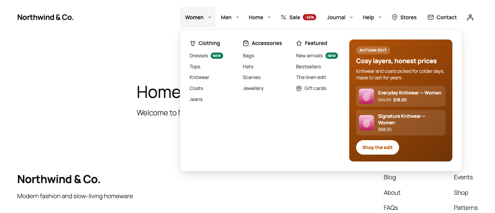
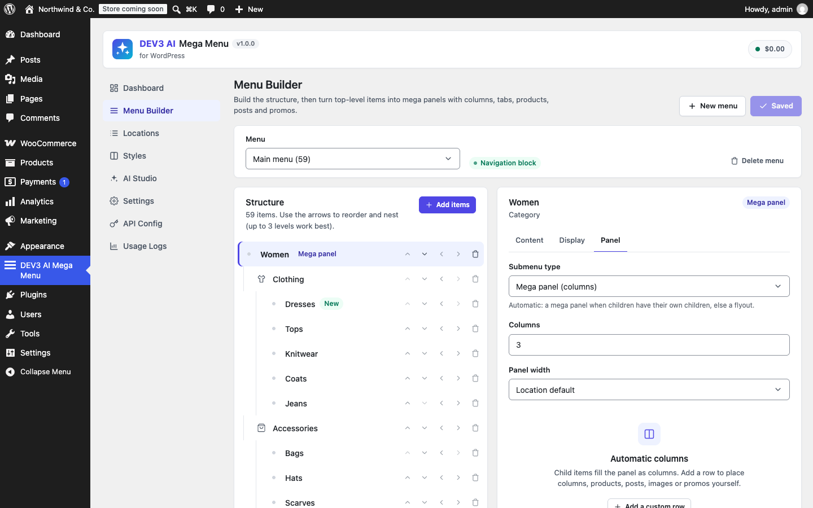
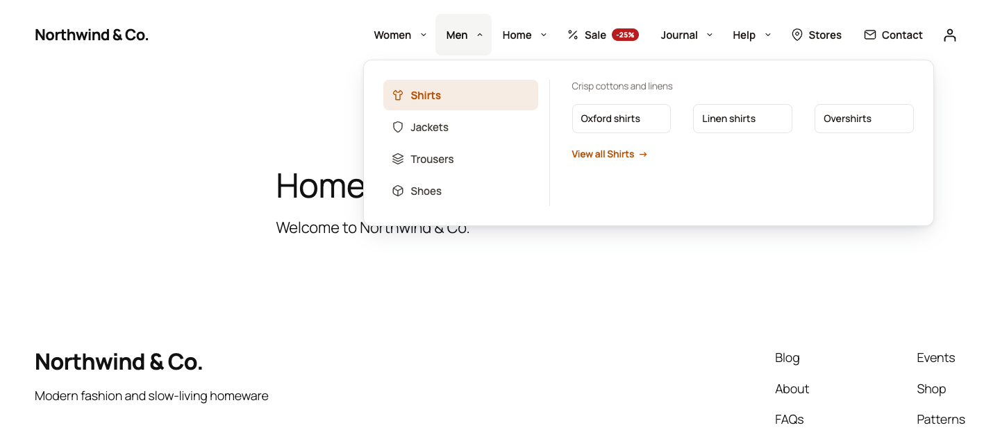
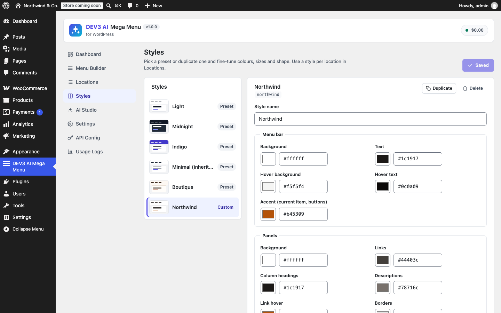
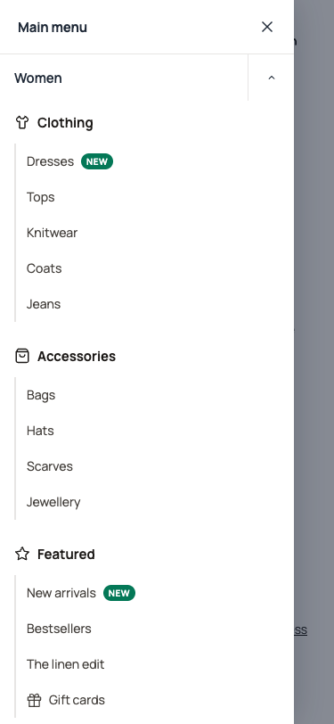
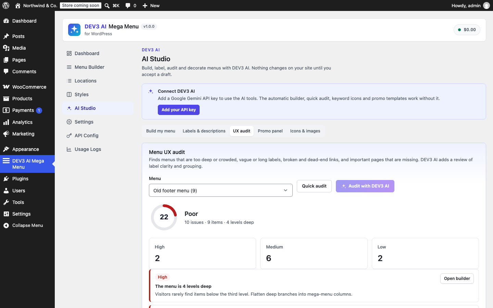

DEV3 AI Mega Menu for WordPress
Accessible mega menus for classic and block themes: columns, tabs, flyouts, products, posts and promos. DEV3 AI builds the menu from your content, writes labels, audits usability and suggests icons. Every AI result is a draft you accept, edit or reject.

Installation
- In WordPress go to Plugins → Add New → Upload Plugin, choose
dev3-ai-mega-menu.zipand activate it. - Open DEV3 AI Mega Menu in the admin menu.
Requirements: WordPress 6.0+, PHP 7.4+ (tested to 8.3). WooCommerce 8+ is optional (product widgets and promo products). No licence key or activation is needed.
Quick start (5 minutes)
- Get a menu. Use an existing WordPress menu, create one in Menu Builder → New menu, or open AI Studio → Build my menu and click Auto-build without AI (or Build with DEV3 AI once a key is set).
- Make a mega panel. In the Menu Builder select a top-level item → Panel tab → Submenu type: Mega panel. Children become columns automatically; add rows to place products, posts, a search box or a promo.
- Show it. Classic theme: Locations → pick the menu for your header location and turn on Use the DEV3 AI Mega Menu here. Block theme: see Block themes.
- Pick a style in Styles (or duplicate a preset and edit it) and select it per location.
- Audit it in AI Studio → UX audit.
Gemini API key setup
- Go to Google AI Studio → API keys and create a key.
- In WordPress open DEV3 AI Mega Menu → API Config, paste the key and save. The key is encrypted (AES-256-GCM) and never sent to the browser. You can also define
DEV3MM_GEMINI_API_KEYinwp-config.php. - Optional: choose models (default
gemini-2.5-flash, progemini-2.5-pro), set a monthly budget, or turn AI off entirely.
Menu Builder

The builder edits real WordPress menus (the same ones as Appearance → Menus).
- Add items: pages, posts, categories, product categories, products or custom links, at the top level or under an item.
- Arrange: ↑ ↓ reorder, ← moves an item out a level, → makes it a sub-item of the previous item. Three levels work best.
- Item settings: Content (label, URL, description, title attribute, CSS classes, new tab), Display (icon, image, badge, show description, hide label, hide on mobile/desktop), Panel (top-level only).
- Live preview shows the real front-end menu with your unsaved changes, on desktop and mobile.
- Nothing is saved until you click Save menu. Broken links (deleted or unpublished targets) are flagged in red.
Mega panels & widgets
Automatic columns: each child becomes a column heading with its own children listed below (set the number of columns, 1–6). Custom rows: add rows of columns on a 12-column grid and fill them with widgets. Children you do not place still appear in automatic columns below your rows, so nothing gets lost. The side column sits on the right of the panel (ideal for promos).
| Widget | What it shows |
|---|---|
| Menu column | A child item as a heading with its sub-items (optionally with an image). |
| Recent posts | Latest posts, optionally from one category, with featured images. |
| Products | WooCommerce best sellers, newest, featured, on sale, a category, or hand-picked products, with price. |
| Search box | A labelled search form for everything, posts, pages or products. |
| Image | A media-library image with link and caption. |
| Promo block | Badge, headline, text, button, image and up to 3 products, in four colour treatments. |
| HTML / Shortcode | Your own HTML (sanitised) or any shortcode (forms, sliders…). |
| Synced pattern | A reusable block from the block editor. |
Tabs & flyouts

Mega panel with tabs: each child is a tab (keyboard: arrow keys, Home, End); its children fill the tab panel, with an optional description and a “View all” link. Flyout: a classic dropdown; deeper levels fly out to the side and flip left near the screen edge. Automatic picks a mega panel when children have their own children, otherwise a flyout.
Icons, images, badges, descriptions
- 60 built-in line icons (searchable picker; the “Use …” button suggests one from the label).
- Item images: a thumbnail next to the label, or a large image above a column heading.
- Badges: New, Sale, Hot, Info or a custom colour.
- “Hide label” keeps the text for screen readers (icon-only items).
Locations & behaviour
For every theme location you choose the menu, turn the mega menu on, and set:
| Setting | Options |
|---|---|
| Style | Any preset or custom style. |
| Open submenus on | Hover (with delay; click and keyboard always work) or click only. |
| Animation | Fade, fade + slide, none (reduced-motion users always get none). |
| Orientation / alignment | Horizontal bar or vertical sidebar; start, center, end, spread. |
| Mega panel width | Full window, menu-bar width, or fit content (overridable per item). |
| Mobile | Breakpoint (600–1200 px or never), accordion or off-canvas drawer (left/right), toggle label. |
| Sticky | Stick to the top on scroll (desktop, optionally mobile), respecting the admin bar. |
| Search box, aria-label | Search at the end of the bar; accessible name for the navigation landmark. |
Block themes (Twenty Twenty-Five and others)
Block themes do not use menu locations. Two options:
- Add the block: Appearance → Editor → your Header template → add DEV3 AI Mega Menu, choose the menu (and optionally style, trigger, mobile mode).
- Replace the Navigation block: Locations → “Blocks, shortcodes & builders” → Replace the Navigation block: First Navigation block on each page (usually the header) or Every Navigation block, and choose the menu. No template editing needed.
Block, shortcode, Elementor, WPBakery
[dev3mm_menu menu="main-menu" theme="dark" trigger="click" mobile_mode="offcanvas"]
Attributes: menu (id, slug or name), location (use that location's menu and settings), theme, trigger, mobile_mode, orientation, align, animation, breakpoint, sticky. Unset attributes use the “Blocks, shortcodes & builders” settings. Elementor: search “DEV3 AI Mega Menu” in the widget panel. WPBakery: the element is in the “DEV3 AI” category.
Styles

Five presets (Light, Midnight, Indigo, Minimal — inherits your theme, Boutique). Presets are read-only; Duplicate one to edit colours (bar, panels, mobile, badges), bar height, radius, font size/weight/family, spacing, shadow and uppercase labels, with a live preview. Styles are CSS custom properties, so the front-end stylesheet stays small and cacheable.
Mobile menus

Below the breakpoint a Menu button opens an accordion under the bar or an off-canvas drawer with overlay, close button, scroll lock and focus trap. Panels collapse into accordion sections (touch targets ≥ 44 px), tabs become stacked sections, and items can be hidden per device. The layout is decided by CSS before JavaScript runs, so there is no layout shift.
Accessibility (WCAG 2.2 AA)
- WAI disclosure navigation pattern: every submenu has a real
<button>witharia-expandedandaria-controls; links stay links. Items without a URL become a single button. - Keyboard: Tab, Enter/Space, Escape (closes and returns focus), ←/→ between top items, ↓ opens and enters a panel, ↑/↓ inside flyouts, Home/End; tabs follow the ARIA tabs pattern.
- Hover only reacts to mouse pointers; touch taps work as expected. Focus leaving a panel closes it.
aria-current="page", labelled search fields, a named<nav>landmark, visible focus rings, reduced-motion and forced-colours support.
DEV3 AI: Build my menu
AI Studio → Build my menu reads published pages (up to 400 by default), post categories, product categories and best-selling products, then asks DEV3 AI for a structure: top items, mega columns, groups, labels in your language and fitting icons. Every link is checked against your real content; invented links are dropped. Review the draft (edit labels, remove items, preview it), then Accept and save menu into a new menu or replace/append to an existing one. Typical time for 200 pages and 50 categories: 15–45 seconds. Auto-build without AI builds a sensible menu from your page hierarchy and categories instantly.
DEV3 AI: Labels & descriptions
Suggests short, clear labels and one-line descriptions for every item, in the site language (or the language set in Settings). Each row is editable and selectable; only the rows you apply are changed. Optionally switch on “Show descriptions” for sub-items.
DEV3 AI: UX audit

Quick audit (no AI) checks depth (> 3 levels), top-level count (> 8), crowded groups (> 12 links), vague or long labels, duplicates, broken and dead-end links, hidden labels without an icon, and missing Home, Contact and Shop links. Audit with DEV3 AI adds a review of label clarity and grouping and suggests missing pages. You get a 0–100 score and one-click fixes (rename an item, add a missing link).
DEV3 AI: Promo panel
Choose a menu item, an occasion (empty = current season), an optional real offer and a tone. DEV3 AI writes a badge, headline, text and button label and picks up to 3 products from the source you choose (on sale, featured, best sellers, newest or a category). It never invents discounts. Edit the draft, then Accept and add to panel: the promo is placed in that item's side column. Use a template works without AI.
DEV3 AI: Icons & images
Suggests an icon from the built-in set for every item plus image candidates (the linked page's featured image, the product category thumbnail, or media-library matches). Pick per row and apply. Without AI, Match by keywords does the same with keyword matching.
Budget & usage
API Config: monthly budget in USD (AI pauses when reached), AI on/off, caching of repeat requests, PII masking. Usage Logs: requests, tokens and estimated cost per feature and model. Heavy tasks (Build my menu) use a 2048-token thinking budget and a 150-second timeout.
Performance
- Front end: ~3 KB JavaScript + ~8 KB CSS (gzipped), no jQuery, deferred, loaded only where a mega menu renders (or always, if you choose).
- No AI or remote calls on the front end. Images in panels lazy-load.
Developers
Filters & actions
| Hook | Purpose |
|---|---|
dev3mm_menu_html | Filter the rendered menu HTML ( $html, $menu_id, $location, $config ). |
dev3mm_widget_html | Filter a rendered panel widget ( $html, $widget ). |
dev3mm_use_for_nav_menu | Return false to keep the theme menu for a wp_nav_menu() call ( $use, $args ). |
dev3mm_icons | Add or replace icons ( name => [ label, keywords, d ] — 24×24 stroke path). |
dev3mm_presets | Add style presets. |
dev3mm_default_occasion | Default promo occasion per month. |
dev3mm_prompt_dev3mm_build_menu, …_labels, …_audit, …_promo, …_icons | Override AI prompt templates (versioned, with JSON schemas). |
dev3mm_menu_saved (action) | Fires after the builder saved a menu ( $menu_id ). |
dev3mm_ai_guard, dev3mm_model_prices, dev3mm_capability, dev3mm_manage_capability | AI gate, price table and capabilities (shared DEV3 core). |
The core wp_nav_menu_objects filter is applied, so menu-visibility plugins keep working. Item settings are stored in the _dev3mm_item post meta of each menu item; location settings in dev3mm_locations, custom styles in dev3mm_themes. JavaScript: window.dev3mmInit( root ) initialises menus injected after page load.
REST API (/wp-json/dev3mm/v1/, administrators, REST nonce)
| Route | Methods |
|---|---|
menus, menus/<id> | GET list / tree, POST create / save tree, DELETE |
menus/<id>/items | POST partial updates (title, description, config) |
menus/<id>/promo | POST insert an accepted promo into an item's panel |
locations, themes | GET / POST |
preview, content, overview | POST rendered HTML (saved, unsaved or draft), GET content picker, GET dashboard |
build, build/apply | POST draft (mode ai|rules), POST apply accepted draft |
audit, ai/labels, ai/icons, ai/promo | POST drafts (nothing saved) |
Privacy
Only administrators trigger AI requests. Sent to Google Gemini: your site name and tagline, menu labels and links, titles and IDs of pages, categories and (best-selling) products, and product prices for promos. No visitor or customer data is sent. A privacy-policy snippet naming Google Gemini is added under Settings → Privacy, and the usage log supports the WordPress personal-data exporter and eraser. Optional PII masking removes emails, phone numbers and card numbers from prompts.
FAQ
Does it replace Appearance → Menus?
It works with the same menus; you can use either screen. Mega settings live on the menu items.
My theme still shows its own mobile button.
Some themes add a mobile toggle around the menu location. Hide it with the theme's settings or a line of CSS, or use the block/shortcode in a custom header.
Can I use different styles on different menus?
Yes: per location, per block, per shortcode (theme="") and per Elementor/WPBakery widget.
Does it work with page caching?
Yes. The menu is plain HTML with no per-visitor data and no front-end AI.
RTL and translations?
Yes: an RTL stylesheet is included and all strings are translatable (languages/dev3-ai-mega-menu.pot).
Troubleshooting
- Menu not showing: in Locations, check that a menu is assigned and “Use the DEV3 AI Mega Menu here” is on (classic), or set up the block / Navigation replacement (block themes).
- Panels hidden behind content: raise the header's
z-indexin your theme, or set the menu bar to sticky. - Optimisation plugin removes styles: Settings → Load front-end files → On every page.
- AI errors: the message explains the cause (invalid key, quota, budget reached). The non-AI tools keep working.
Changelog
1.0.0 — 2026-10-25
- Initial release: mega panels, tabs, flyouts, widgets, styles, locations, block/shortcode/Elementor/WPBakery, accessible mobile menus, and five DEV3 AI tools.
© DEV3 Technologies · dev3.tech/support · Google Gemini is a trademark of Google LLC.